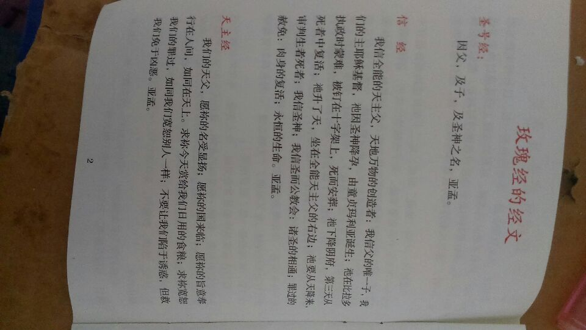

Conversation with 81184027 at Mon 05 May 2014 09:04:06 AM CST on 154115835 (webqq)
(05/05/2014 06:34:07 AM) 安徽-市区&钟馗: http://forum.china.com.cn/forum.php?mod=viewthread&tid=3648380&extra=page%3D1%26filter%3Dtypeid%26typeid%3D850%26typeid%3D850
(05/05/2014 06:34:07 AM) 安徽-市区&钟馗: http://forum.china.com.cn/forum.php?mod=viewthread&tid=3648380&extra=page%3D1%26filter%3Dtypeid%26typeid%3D850%26typeid%3D850
(11:07:20 AM) Dao法自然: 谁能说说瞬间就是永恒？？？
(11:08:04 AM) Dao法自然: 从唯物角度去理解。。。？？？
(11:25:32 AM) pastorqi: 5月5日，2014年的第125天。
天天主恩惠,福满溢灵程!
愿我们收获活水吗哪，对神发出感谢赞美
旧约 路 1：-2:
诗 106:
箴 14:23-24
新约 约 4:
(11:28:47 AM) 阿萨汗蛋包飯: :D
(12:14:27 PM) 福建-福州&水浒: @福州-仓山&阿萨 好久不见
(12:49:57 PM) 包头-青山&随心: http://forum.china.com.cn/forum.php?mod=viewthread&tid=3648380&extra=page%3D1%26filter%3Dtypeid%26typeid%3D850%26typeid%3D850
(12:50:44 PM) 包头-青山&随心: 为什么全能神邪教在中国这么疯狂呢？
http://forum.china.com.cn/forum.php?mod=viewthread&tid=3733881&fromuid=1310547
(出处: 互动中国)
(12:51:02 PM) 向北方¶且听风吟: 疯狂吗
(12:51:17 PM) 向北方¶且听风吟: 我怎么听说过
(12:51:51 PM) 包头-青山&随心: 当然
(12:53:57 PM) 光: http://www.ithome.com/html/out/23707.htm
(12:54:12 PM) 向北方¶且听风吟: 大红龙是啥
(12:54:26 PM) 光: 9.英国广播公司（BBC）logo
设计投入费用：180万美元
BBC在1997年花费180万重新设计了它的logo，将原来的斜体、彩色的logo变成了简单的、方框包字母的黑白色形式。
(12:54:41 PM) 光: BBC這麼簡單的logo居然花了180萬
(12:54:47 PM) 光: 還是美元
(12:55:08 PM) 光: 爲啥不找我呢:face13:
(01:44:17 PM) 光: 导语：近日，多家媒体转发转载了湖北一名银行员工利用汇款手续费“智斗骗子”的新闻，引发网友热议。事实上，这是一条不折不扣的假新闻。除此之外，类似的广为流传的所谓“智斗骗子”的伎俩，也大多是自作聪明自欺欺人。 每次汇1分钱让骗子赔2块？国内绝大多数银行之间转账（包括网上银行和手机银行）并不提供“收款人支付手续费”这一服务，而且这一行为涉嫌故意毁坏财物罪 谣言内容：4 月30日《孝感晚报》报道称一名当地邮政银行员工收到一条诈骗短信让其汇款至骗子的邮政银行账户上。该员工灵机一动利用自己手机银行业务向骗子转账，采用 对方扣款付手续费的方式，每次只汇0.01元就能让骗子扣款2元，结果第三天骗子的账户就“卡壳”了。她便据此推测自己用4元多钱让骗子损失了800多 元。报道出炉不久，人民网、环球时报、中国新闻网等媒体纷纷转载转发，一些对诈骗短信不胜其烦的网友也争相转发，对报道中银行员工“智斗骗子”的办法表示“涨知识”。 真相还原：这并不是一条新谣言，早在2011年，社交媒体上就流传着“每次给骗子汇款1分钱，扣骗子2元手续费，汇完1元后骗子就求饶”的段子。2013年，在《南方都市报》一则深圳警方破获电信诈骗团伙的新闻中也提到“该团伙的行骗对象中有一名银行职员。因为具有很强的反诈骗意识，这名职员故意7次汇款给嫌犯的银行卡，每笔1分钱，导致嫌犯的银行卡每次被扣除20余元的手续费”。 目前，在银行规定方面，国内绝大多数银行之间转账（包括网上银行和手机银行）并不提供“收款人支付手续费”这一服务，手续费都是从汇款人的账户上扣 除的。即使是作为银行业后来者的中国邮政储蓄银行，也规定单笔转账在10元以下的，手续费都必须由转出方支付。毕竟，手续费的受益者是银行而不是收款方。 如果真的可以任何人都“汇1分让收款方付2元手续费”，利益受损的收款方一定会以银行为目标寻求救济。因此，金融机构自然会在流程设计中规避不必要的法律 风险。 从诈骗犯罪的行为方式来看，为了避免被警方跟踪，骗子会隔一段时间换掉银行账户，对于骗到手的资金也会迅速的转移，极少留余额供汇款方扣除手续费。因此，骗子受损失的可能性很小。 即使该银行员工真的通过小额汇款让收款方付手续费的方式让骗子损失了800元，也是侵犯了骗子对其财物的合法所有权的行为，涉嫌毁坏涉嫌故意毁坏他人财物。对于诈骗罪这种和平型犯罪，正当防卫的理由显然是不适用的。 连续3次错输查询密码可暂时冻结骗子账户？只能锁定电话查询功能或者暂时阻止骗子登陆网络银行，骗子依然可以使用前往柜台和自动取款机转移资金 谣言内容：有关整骗子的不实新闻，除了“汇1分钱坑骗子2元”以外，还有用输错密码的方式暂时“冻结”骗子账户。 《现代快报》近日的报道中，也曾提到警方通过输错5次网络银行密码临时阻止了骗子登陆网络银行。 真相还原：这里所谓的电话银行 “错输密码”指的并不是支付密码，而是电话银行和网络银行的查询密码。与取款密码不同，查询密码输入错误，只能暂时锁定骗子的电话银行和网络银行，并不影 响其通过柜台和自动取款机机上取款。因为错输密码锁定机制的主要目的是为了防止非金融卡持有者恶意试探密码，而并不是银行为用户设计的紧急救济措施。而 且，即使骗子的银行卡电话银行和网络银行被锁定，理论上还可以带上自己的身份证到银行网点直接解冻。 另外，多家银行的网络银行并不能直接使用银行账户登陆，而是需要用户设置的用户名、证件号码或者开发人开户地信息以及登陆密码。也就是说，如果骗子的账户开在这些银行，在只知道账户号的情况下，连“错输密码”进而锁定骗子的网络银行功能也做不到。 被歹徒挟持时，倒着输入支付密码可以报警？目前国内银行暂未提供此服务；若真有此服务，摸索着倒着输入密码也可能激怒挟持者，威胁自身安全 谣言内容：“如果你被匪徒挟持，匪徒逼迫你输入银行卡密码，你可以用倒转输入密码的方式间接通知警方！例如你的 密码是‘123456’的话，你可以输入‘654321’，这时提款机会识别出你是以倒转方式输入密码，在按你的要求吐出现金的同时，向警方报警”，这是 一条曾在社交媒体上广为流传的谣言，不少网友都被这种“机智”的报警方式忽悠了。 真相还原：这可能是被辟谣过最多的谣言了，不少媒体都曾通过向银行业从业人士或者实验证伪了这条谣言：目前中国 的自动取款机并没有这种“倒转输入密码报警”的功能，自动取款机的系统只能识别密码是否与计算机系统内预留的一致，倒着输入密码就表示密码输入错误，不可 能取出钱，也不存在报警的情况。 在辟谣的报道中，媒体多关注的是回文密码如456654无法逆转的问题。事实上，这种逆转密码的报警方式没有被采用并不是因为技术原因：早在 1998年就有位美国商人发明过一套“安全密码”系统，可以让遭挟持的受害者通过倒着输入密码的方式向执法部门汇报，并通过设置“胁迫码”解决了回文密码 无法逆转的问题。美国伊利诺伊州议会在2004年甚至通过了一条议案规定该州的自动取款机“可以被”设计或编程为当顾客以相反顺序输入密码时，自动取款机 会自动发送警报给所属管辖区域的执法部门。 但是10年来并无银行自愿安装该系统。除了成本原因之外，更为重要的是受害者摸索着输入反转密码的行为可能会引起挟持者的警觉，实施加害行为。对 于普通人来说，平时用惯了的密码快速反转过来并不容易。对许多人来说，就算在没有压力的条件下，要在头脑中把自己的密码反着念出来也非常困难。更何况被暴 力的、有武器的歹徒所挟持，在恐惧之下难度就更高。如果受害者输入密码时笨手笨脚，甚至输错而使机器显示错误信息、没有吐钱，很可能激怒挟持者，或令其意 识到受害者正在报警。
(01:44:44 PM) 光:
导语：近日，多家媒体转发转载了湖北一名银行员工利用汇款手续费“智斗骗子”的新闻，引发网友热议。事实上，这是一条不折不扣的假新闻。除此之外，类似的广为流传的所谓“智斗骗子”的伎俩，也大多是自作聪明自欺欺人。
每次汇1分钱让骗子赔2块？国内绝大多数银行之间转账（包括网上银行和手机银行）并不提供“收款人支付手续费”这一服务，而且这一行为涉嫌故意毁坏财物罪
谣言内容：4月30日《孝感晚报》报道称一名当地邮政银行员工收到一条诈骗短信让其汇款至骗子的邮政银行账户上。该员工灵机一动利用自己手机银行业务向骗子转账，采用对方扣款付手续费的方式，每次只汇0.01元就能让骗子扣款2元，结果第三天骗子的账户就“卡壳”了。她便据此推测自己用4元多钱让骗子损失了800多元。报道出炉不久，人民网、环球时报、中国新闻网等媒体纷纷转载转发，一些对诈骗短信不胜其烦的网友也争相转发，对报道中银行员工“智斗骗子”的办法表示“涨知识”。
真相还原：这并不是一条新谣言，早在2011年，社交媒体上就流传着“每次给骗子汇款1分钱，扣骗子2元手续费，汇完1元后骗子就求饶”的段子。2013年，在《南方都市报》一则深圳警方破获电信诈骗团伙的新闻中也提到“该团伙的行骗对象中有一名银行职员。因为具有很强的反诈骗意识，这名职员故意7次汇款给嫌犯的银行卡，每笔1分钱，导致嫌犯的银行卡每次被扣除20余元的手续费”。
目前，在银行规定方面，国内绝大多数银行之间转账（包括网上银行和手机银行）并不提供“收款人支付手续费”这一服务，手续费都是从汇款人的账户上扣除的。即使是作为银行业后来者的中国邮政储蓄银行，也规定单笔转账在10元以下的，手续费都必须由转出方支付。毕竟，手续费的受益者是银行而不是收款方。如果真的可以任何人都“汇1分让收款方付2元手续费”，利益受损的收款方一定会以银行为目标寻求救济。因此，金融机构自然会在流程设计中规避不必要的法律风险。
从诈骗犯罪的行为方式来看，为了避免被警方跟踪，骗子会隔一段时间换掉银行账户，对于骗到手的资金也会迅速的转移，极少留余额供汇款方扣除手续费。因此，骗子受损失的可能性很小。
即使该银行员工真的通过小额汇款让收款方付手续费的方式让骗子损失了800元，也是侵犯了骗子对其财物的合法所有权的行为，涉嫌毁坏涉嫌故意毁坏他人财物。对于诈骗罪这种和平型犯罪，正当防卫的理由显然是不适用的。
连续3次错输查询密码可暂时冻结骗子账户？只能锁定电话查询功能或者暂时阻止骗子登陆网络银行，骗子依然可以使用前往柜台和自动取款机转移资金
谣言内容：有关整骗子的不实新闻，除了“汇1分钱坑骗子2元”以外，还有用输错密码的方式暂时“冻结”骗子账户。 《现代快报》近日的报道中，也曾提到警方通过输错5次网络银行密码临时阻止了骗子登陆网络银行。
真相还原：这里所谓的电话银行 “错输密码”指的并不是支付密码，而是电话银行和网络银行的查询密码。与取款密码不同，查询密码输入错误，只能暂时锁定骗子的电话银行和网络银行，并不影响其通过柜台和自动取款机机上取款。因为错输密码锁定机制的主要目的是为了防止非金融卡持有者恶意试探密码，而并不是银行为用户设计的紧急救济措施。而且，即使骗子的银行卡电话银行和网络银行被锁定，理论上还可以带上自己的身份证到银行网点直接解冻。
另外，多家银行的网络银行并不能直接使用银行账户登陆，而是需要用户设置的用户名、证件号码或者开发人开户地信息以及登陆密码。也就是说，如果骗子的账户开在这些银行，在只知道账户号的情况下，连“错输密码”进而锁定骗子的网络银行功能也做不到。
被歹徒挟持时，倒着输入支付密码可以报警？目前国内银行暂未提供此服务；若真有此服务，摸索着倒着输入密码也可能激怒挟持者，威胁自身安全
谣言内容：“如果你被匪徒挟持，匪徒逼迫你输入银行卡密码，你可以用倒转输入密码的方式间接通知警方！例如你的密码是‘123456’的话，你可以输入‘654321’，这时提款机会识别出你是以倒转方式输入密码，在按你的要求吐出现金的同时，向警方报警”，这是一条曾在社交媒体上广为流传的谣言，不少网友都被这种“机智”的报警方式忽悠了。
真相还原：这可能是被辟谣过最多的谣言了，不少媒体都曾通过向银行业从业人士或者实验证伪了这条谣言：目前中国的自动取款机并没有这种“倒转输入密码报警”的功能，自动取款机的系统只能识别密码是否与计算机系统内预留的一致，倒着输入密码就表示密码输入错误，不可能取出钱，也不存在报警的情况。
在辟谣的报道中，媒体多关注的是回文密码如456654无法逆转的问题。事实上，这种逆转密码的报警方式没有被采用并不是因为技术原因：早在1998年就有位美国商人发明过一套“安全密码”系统，可以让遭挟持的受害者通过倒着输入密码的方式向执法部门汇报，并通过设置“胁迫码”解决了回文密码无法逆转的问题。美国伊利诺伊州议会在2004年甚至通过了一条议案规定该州的自动取款机“可以被”设计或编程为当顾客以相反顺序输入密码时，自动取款机会自动发送警报给所属管辖区域的执法部门。
但是10年来并无银行自愿安装该系统。除了成本原因之外，更为重要的是受害者摸索着输入反转密码的行为可能会引起挟持者的警觉，实施加害行为。对于普通人来说，平时用惯了的密码快速反转过来并不容易。对许多人来说，就算在没有压力的条件下，要在头脑中把自己的密码反着念出来也非常困难。更何况被暴力的、有武器的歹徒所挟持，在恐惧之下难度就更高。如果受害者输入密码时笨手笨脚，甚至输错而使机器显示错误信息、没有吐钱，很可能激怒挟持者，或令其意识到受害者正在报警。
(01:44:59 PM) 光: http://view.163.com/special/reviews/antiscam0505.html
(02:12:28 PM) lost message from #91831 to #91842
(02:12:29 PM) 阿萨汗蛋包飯: :share:
(02:13:37 PM) 福建-福州&水浒: 阿萨兄
(02:14:03 PM) 福建-福州&水浒: 近来馆里很忙吧:blush:
(02:16:00 PM) 阿萨汗蛋包飯: :wipe:人死的多，周末了都没休息。换季期间都是这样
(02:16:12 PM) 阿萨汗蛋包飯: 春夏之交，老人去的多
(02:16:20 PM) 福建-福州&水浒: --b
(02:16:25 PM) 福建-福州&水浒: 阿门～～～
(02:17:19 PM) 福建-福州&水浒: 你这以后取媳妇是不是一个难题～
(02:17:54 PM) 阿萨汗蛋包飯: 本来就是老大难。。。神会安排
(02:18:06 PM) 福建-福州&水浒: 嗯哼
(02:18:51 PM) 福建-福州&水浒: 该有的还是会有的，去教会里找一个呗
(02:19:22 PM) 福建-福州&水浒: 有共同信仰，谈的好可共同反邪呢
(02:19:36 PM) 福建-福州&水浒: 一举两得
(02:20:11 PM) lost message from #91856 to #91856
(02:20:12 PM) 阿萨汗蛋包飯: --b求神安排。我妈又消失了
(02:21:08 PM) 福建-福州&水浒: ～～～～
(02:21:32 PM) 光: (02:20:12 PM) 阿萨汗蛋包飯: --b求神安排。我妈又消失了 //可能是你處理問題的方法不對吧
(02:22:03 PM) 光: 同樣事情發生兩遍就要反省了
(02:22:23 PM) 阿萨汗蛋包飯: 目前为止，手机一直禁止使用。我只能通过外婆和她联系
(02:22:34 PM) 福建-福州&水浒: 他那也是沒有辦法
(02:22:33 PM) 光: 嗯
(02:22:45 PM) 阿萨汗蛋包飯: 外婆也是全能神的:wipe:
(02:22:53 PM) 安徽-市区&钟馗: http://forum.china.com.cn/forum.php?mod=viewthread&tid=3648380&extra=page%3D1%26filter%3Dtypeid%26typeid%3D850%26typeid%3D850
(02:23:01 PM) 福建-福州&水浒: 夫妻離異，沒人管
(02:23:09 PM) 光: 嗯
(02:23:20 PM) 福建-福州&水浒: 加上個姥姥，
(02:23:20 PM) 阿萨汗蛋包飯: 月儿弯弯照九州，几家欢乐几家愁
(02:23:37 PM) 光: 這樣啊
(02:24:01 PM) 福建-福州&水浒: 除非你娶個媳婦
(02:24:46 PM) 光: 多聯絡一下教會的朋友
(02:24:51 PM) 光: 一起想想辦法
(02:25:16 PM) 光: 如果個人力量偏弱
(02:25:39 PM) lost message from #91875 to #91875
(02:25:40 PM) 福建-福州&水浒: 沒人願意接觸那個領域
(02:26:09 PM) 光: 嗯
(02:26:14 PM) 光: 中國
(02:26:18 PM) 福建-福州&水浒: 基督教規章制度就是一個缺陷啊
(02:26:55 PM) 福建-福州&水浒: 有一條那麽說的，信異端者經多次勸說無果直接開除
(02:27:17 PM) 光: 嗯
(02:27:40 PM) 光: 最近我一直在看香港的基督教的公益網站，學到很多知識
(02:27:50 PM) 福建-福州&水浒: 除非有人具備完大的愛心
(02:28:06 PM) 福建-福州&水浒: 還必須瞭解邪教教義才是
(02:28:09 PM) 光: www1.hkcs.org/intranet/ito/ACB-forms/Positive%20Psychology.html
(02:28:24 PM) 光: http://www1.hkcs.org/intranet/ito/ACB-forms/Positive%20Psychology.html
(02:28:51 PM) 光: http://www.hkcs.org/
(02:28:58 PM) 光: 香港基督教服務區
(02:29:02 PM) 光: 處
(02:29:18 PM) 福建-福州&水浒: 繁體字我看不太懂，我還是切換到簡體字
(02:29:20 PM) 光: 我想國內的教會組織和香港的教會組織到底有多大的差距
(02:29:22 PM) 光: 嗯
(02:29:24 PM) 福建-福州&水浒: 呵呵
(02:31:08 PM) lost message from #91893 to #91893
(02:31:09 PM) 福建-福州&水浒: 当一个宗教变成行政宗教那信仰的纯洁性就已变味了，
(02:31:20 PM) 光: 嗯
(02:32:00 PM) 蔚蓝的天空: 人通过宗教的信仰 能到达一个怎样的目的
(02:32:02 PM) 福建-福州&水浒: 中国许多的法官也难免受到一些行政干预
(02:32:08 PM) 光: 真正良性的教会组织
(02:32:15 PM) 光: 其实是不会拒绝需要帮助的人的
(02:32:46 PM) 光: 自我提升
(02:32:52 PM) 阿萨汗蛋包飯: 达到灵魂转世
(02:32:59 PM) 光: 从生存境界，提升到生活境界
(02:33:04 PM) 阿萨汗蛋包飯: 灵魂升天堂
(02:33:16 PM) 福建-福州&水浒: 对的，基督教家庭教会（地下教会）人家都不能同，他们不帮忙也在情理之中
(02:33:35 PM) 蔚蓝的天空: 灵魂转不了世
(02:34:36 PM) 光: 生存境界里面的问题，就像我们平时经常看到的大欺负小，强欺负弱，众欺负寡，富欺负穷这样的不公平现象
(02:35:00 PM) 光: 上升到生活境界，就不一样了
(02:35:19 PM) 蔚蓝的天空: 如果通过宗教信仰能让人勤劳善良
(02:35:30 PM) 蔚蓝的天空: 那还可以
(02:35:34 PM) 光: 嗯
(02:36:02 PM) 福建-福州&水浒: 光
(02:36:05 PM) 光: 嗯
(02:36:15 PM) 蔚蓝的天空: 就像佛教一样
(02:36:20 PM) 福建-福州&水浒: 前段时间温州教堂的事
(02:36:30 PM) 蔚蓝的天空: 有真善美 在里面
(02:36:38 PM) 自力: 。。。
(02:36:39 PM) 阿萨汗蛋包飯: 我楼下住了个信佛教的疯子
(02:36:43 PM) 光: 宗教都是解决俗世问题的
(02:36:46 PM) 蔚蓝的天空: 有哲学思想在里面
(02:36:47 PM) 福建-福州&水浒: 只因十字架挂的高
(02:36:51 PM) 自力: LZ就是真善美
(02:36:53 PM) 阿萨汗蛋包飯: 神经失常，一直敲木鱼影响人休息
(02:37:05 PM) 自力: 、、、
(02:37:09 PM) 福建-福州&水浒: 政府要强拆教堂
(02:37:16 PM) 光: 嗯
(02:37:21 PM) 福建-福州&水浒: 这做法觉得的对么
(02:37:23 PM) 阿萨汗蛋包飯: 政府要强拆教堂--b
(02:37:36 PM) 光: 三江教堂，已经拆了
(02:37:39 PM) 福建-福州&水浒: 既然基督教合法，国家认同
(02:37:47 PM) 蔚蓝的天空: 不管信仰什么 不要到痴迷的程度就好
(02:38:10 PM) 福建-福州&水浒: 市长说十字架挂太高了
(02:38:26 PM) 阿萨汗蛋包飯: 十字架挂太高了？影响了政府？
(02:38:43 PM) 福建-福州&水浒: 难免又会给邪教装空子了
(02:39:12 PM) 光: 信仰是弱者的武器
(02:39:17 PM) 福建-福州&水浒: 其实就是市长看不顺眼而已
(02:39:27 PM) 自力: 。。。
(02:39:38 PM) 自力: 枪好使
(02:39:41 PM) 自力: 除了这玩意
(02:39:41 PM) 蔚蓝的天空: 痴迷就会走火入魔
(02:39:43 PM) 自力: 都不好使
(02:40:11 PM) 阿萨汗蛋包飯: 那么怎么寺庙不拆除
(02:40:18 PM) 光: 也拆
(02:40:22 PM) lost message from #91943 to #91943
(02:40:16 PM) 阿萨汗蛋包飯: 佛教就顺眼了
(02:40:15 PM) 蔚蓝的天空: 战乱的年代 还会谈什么宗教信仰
(02:40:13 PM) 安徽-市区&钟馗: 这个网址挺好的 http://forum.china.com.cn/forum-4979-1.html
(02:40:48 PM) lost message from #91945 to #91945
(02:40:49 PM) 阿萨汗蛋包飯: 呵呵无神论统治就是这样
(02:40:50 PM) 自力: 13亿人
(02:40:53 PM) 自力: 一人一把枪
(02:40:57 PM) 自力: 估计能好使点
(02:41:07 PM) 光: 要什么枪啊
(02:41:16 PM) 光: 一人自己做一个弹弓就行了
(02:41:20 PM) 福建-福州&水浒: 现在的宗庙特别出名不收门票的有几个呢
(02:41:24 PM) 自力: 。。。
(02:41:30 PM) 自力: 弹弓不好使
(02:41:42 PM) 福建-福州&水浒: 我倒是觉得成旅游景点呢
(02:41:52 PM) 光: 嗯
(02:41:54 PM) 包头-青山&随心: 信仰
(02:42:09 PM) 福建-福州&水浒: 烧一个香动者几十
(02:42:12 PM) 蔚蓝的天空: 横扫一切牛鬼蛇神
(02:42:35 PM) 福建-福州&水浒: 宗庙政府有收入就不拆
(02:42:53 PM) lost message from #91961 to #91961
(02:42:48 PM) 蔚蓝的天空: 现在的崇拜金钱 宗教也不例外
(02:42:49 PM) 自力: 信佛 信因果
(02:42:53 PM) lost message from #91964 to #91964
(02:42:54 PM) 自力: 别信 鬼
(02:42:45 PM) 福建-福州&水浒: 发展地方经济
(02:42:54 PM) 福建-福州&水浒: 这生意做的好
(02:43:00 PM) 阿萨汗蛋包飯: 教堂政府就没收入了，不征收税
(02:43:09 PM) 蔚蓝的天空: 佛教也是一样敛财
(02:43:15 PM) 自力: 大家觉得买2手车怎么样
(02:43:19 PM) 蔚蓝的天空: 也就是所谓的香火钱
(02:43:23 PM) 福建-福州&水浒: 嗯嗯
(02:43:35 PM) 福建-福州&水浒: 大同小异吧
(02:43:58 PM) 阿萨汗蛋包飯: 信徒进寺庙是贿赂，进教堂是忏悔，境界不同
(02:44:00 PM) 阿赑: 新手？
(02:44:12 PM) 蔚蓝的天空: 重视宗教信仰的应该清贫才对
(02:44:23 PM) 阿赑: 新手还是买新车吧
(02:45:28 PM) 福建-福州&水浒: 我一同学信佛，在北京时候进庙先收你个门票，烧个香拜个佛被坑几百～～～
(02:45:53 PM) 反邪★石家庄: 新手才买二手车，刮蹭不心疼，练好了在买新的
(02:46:21 PM) 福建-福州&水浒: 他说不是拜佛了，进去烧人民币了，真是坑爹
(02:46:41 PM) 蔚蓝的天空: 是啊
(02:47:05 PM) 福建-福州&水浒: 没有退路
(02:47:19 PM) 自力: 一哥们说 新手买二手车 坏路上了怎么办
(02:47:26 PM) 宁静的茶: http://3g.k.sohu.com/t/n18262554
(02:47:42 PM) 蔚蓝的天空: 关键还要看当政者怎么引导、
(02:47:58 PM) 阿萨汗蛋包飯: 当政者无神论
(02:48:16 PM) 自力: 读书越多的人
(02:48:19 PM) 自力: 越是不信
(02:48:19 PM) 蔚蓝的天空: 当政者的引导决定社会风气
(02:48:23 PM) 自力: 聪明人都信自己
(02:48:45 PM) 光: 也不一定
(02:49:15 PM) 蔚蓝的天空: 当所有的事情都靠金钱解决的时候 宗教信仰也不例外
(02:49:35 PM) 蔚蓝的天空: 没有钱宗教也运作不了
(02:49:56 PM) 福建-福州&水浒: 没有哪个人敢说自己特聪明
(02:50:24 PM) 福建-福州&水浒: 我倒认为自己愚昧无知，
(02:50:36 PM) 光: 嗯
(02:50:37 PM) 蔚蓝的天空: 在聪明的人都有弱点
(02:50:39 PM) lost message from #91995 to #91995
(02:50:40 PM) 福建-福州&水浒: 人外有人，天外有天，
(02:50:52 PM) 福建-福州&水浒: 谁能说自己聪明呢
(02:51:59 PM) lost message from #91998 to #91998
(02:51:32 PM) 阿萨汗蛋包飯: 当钱解决不了问题时，科学也解决不了之时，人就开始仰望宗教了
(02:51:49 PM) 阿萨汗蛋包飯: 譬如生与死。
(02:51:12 PM) 蔚蓝的天空: 聪明人只能说他在某个领域的造诣
(02:52:03 PM) 蔚蓝的天空: 总的来说 是吃饱肚子了闲的
(02:52:17 PM) 阿萨汗蛋包飯: 钱多并不是永远不死、
(02:52:21 PM) 阿萨汗蛋包飯: 不死之身
(02:52:33 PM) 蔚蓝的天空: 你看一九四二的时候 那里面有个扛着十字架的人
(02:52:50 PM) 蔚蓝的天空: 真实觉得可笑
(02:52:51 PM) 阿萨汗蛋包飯: 无论穷人富人最终归宿就是个骨灰盒或墓穴
(02:53:01 PM) 福建-福州&水浒: :):)
(02:53:18 PM) 福建-福州&水浒: 也就那一个平方的地方
(02:53:52 PM) 福建-福州&水浒: 死不起，一平方收你几千不过份
(02:53:54 PM) 包头-青山&随心: 他们所考虑的是死后灵魂的去处
(02:54:06 PM) 蔚蓝的天空: 只有那个小盒才是你最终的归宿 关键是你在进入那个小盒之前怎么做 做了什么
(02:54:33 PM) 宁静的茶: http://3g.k.sohu.com/t/n18262554
(02:54:52 PM) 蔚蓝的天空: 没有死不起 只要你死了 会有人解决后事的
(02:55:15 PM) 福建-福州&水浒: 后人的负担
(02:55:46 PM) 蔚蓝的天空: 那你选择一个没有人的地方自行了断
(02:56:01 PM) 福建-福州&水浒: 对有钱人不算什么，对讲面子又没钱的人就是负担
(02:56:41 PM) 福建-福州&水浒: 自杀是个罪，
(02:56:56 PM) 福建-福州&水浒: 那是弱者的表现
(02:57:08 PM) 福建-福州&水浒: 有什么坑不能过么
(02:57:36 PM) 蔚蓝的天空: 你不是不想给后人留负担吗
(02:57:40 PM) 福建-福州&水浒: 人生或死自有天命
(02:58:13 PM) 福建-福州&水浒: 我说过我自己了吗
(02:58:38 PM) 阿萨汗蛋包飯: 长乐也懂生死懂圣经很懂:share:
(02:59:09 PM) 阿萨汗蛋包飯: 宗教奇妙之处在于死人可以复活：比如耶稣和拉撒路
(02:59:54 PM) 蔚蓝的天空: 用百度搜索李洪志的时候 相关人物第一个居然是毛主席
(03:00:25 PM) 阿萨汗蛋包飯: 橄榄山就是一座坟墓。以色列人坚信死人埋在橄榄山可以复活
(03:00:31 PM) 福建-福州&水浒: 对有钱人不算什么，对讲面子又没钱的人就是负担
(03:01:42 PM) lost message from #92028 to #92030
(03:01:15 PM) 蔚蓝的天空: 请讲 托帮
(03:00:40 PM) 福建-福州&水浒: 我可没说我自己
(03:00:45 PM) 福建-福州&水浒: @蔚蓝的天空
(03:00:56 PM) 福建-福州&水浒: 社会中不乏这样的人
(03:01:46 PM) 福建-福州&水浒: 讲一个事吧，
(03:01:46 PM) 阿萨汗蛋包飯: 拉撒路死了四天居然能复活。奇迹
(03:02:06 PM) 福建-福州&水浒: 前几日我朋友奶奶去世，
(03:02:27 PM) 阿萨汗蛋包飯: 嗯，然后呢
(03:02:36 PM) 蔚蓝的天空: 死而复活的事情是有
(03:02:51 PM) 蔚蓝的天空: 但和神鬼无关
(03:02:52 PM) 福建-福州&水浒: 来参加葬礼的客人每人发了红包 人民币400
(03:03:17 PM) 阿萨汗蛋包飯: 新约记载的是死了四天尸体臭了还能复活
(03:03:37 PM) 福建-福州&水浒: 我朋友家庭经济不好
(03:03:38 PM) 阿萨汗蛋包飯: 人民币400
普遍现象
(03:03:42 PM) 福建-福州&水浒: 习俗是这样
(03:03:50 PM) 阿萨汗蛋包飯: 要撑面子
(03:03:53 PM) 阿萨汗蛋包飯: 必须的
(03:04:00 PM) 福建-福州&水浒: 这就是讲面子活着的人受罪
(03:04:13 PM) 福建-福州&水浒: 奶奶逝去成他家负担了
(03:04:29 PM) 福建-福州&水浒: 这不是死不起的例子吗
(03:04:36 PM) 蔚蓝的天空: 攀比之风盛行
(03:04:43 PM) 福建-福州&水浒: 买个墓地5000多，只一平米
(03:04:52 PM) 蔚蓝的天空: 奢靡之风盛行
(03:04:56 PM) 福建-福州&水浒: 攀比风农村比比皆是
(03:05:10 PM) 福建-福州&水浒: 干嘛那么累呢
(03:05:24 PM) 福建-福州&水浒: 酒席摆了20多卓
(03:05:36 PM) 福建-福州&水浒: 客人800多号人
(03:05:37 PM) 阿萨汗蛋包飯: 不仅农村，城市也是，全国都如此
(03:05:45 PM) 福建-福州&水浒: 算算是不是死不起
(03:05:58 PM) 福建-福州&水浒: 墓地买了5000
(03:06:33 PM) 安徽-马鞍&心语: 死了什么也不用管了，买得起买不起都不是自已的事了。
(03:06:43 PM) 蔚蓝的天空: 200年后 后人考古什么也得不到
(03:07:04 PM) 蔚蓝的天空: 因为本朝的墓葬里 就只有那只小盒
(03:16:43 PM) 阿萨汗蛋包飯: 遗体火化过程中，如果生成的燃烧产物不能再发生燃烧，则称为完全燃烧，且放出的热量较多。组成人体的主要可燃元素是碳和氢，其完全燃烧反应过程如下：C+O2——CO2+394. 03千焦耳/克分子 H2+O2——H2O+436千焦耳/克分子
(03:20:11 PM) 福建-福州&水浒: ～～～→_→←_←
(03:23:08 PM) lost message from #92063 to #92065
(03:23:06 PM) 阿萨汗蛋包飯: 呵呵，小说看多了。。。只有尸臭。
(03:22:30 PM) 福建-福州&水浒: 有没有听说灵异事件？
(03:22:36 PM) 福建-福州&水浒: @福州-仓山&阿萨
(03:22:49 PM) 福建-福州&水浒: 呵呵:stuck_out_tongue_winking_eye:
(03:23:22 PM) 福建-福州&水浒: 呃:sweat:
(03:24:04 PM) 阿萨汗蛋包飯: 五一有趣的是，白事红事同时进行，这也真巧
(03:24:36 PM) 福建-福州&水浒: 那个环境给我的影像就是阴森
(03:24:37 PM) 阿萨汗蛋包飯: 社区内葬礼婚礼同时举办
(03:24:55 PM) 福建-福州&水浒: 呵呵，
(03:25:03 PM) 福建-福州&水浒: 你住的社区？
(03:25:14 PM) 福建-福州&水浒: 巧合，巧合
(03:25:33 PM) 福建-福州&水浒: 是一家人？
(03:26:49 PM) 阿萨汗蛋包飯: 嗯。老人区。65岁以上老人占总社区人口的50%，不是一家人
(03:27:08 PM) 阿萨汗蛋包飯: 凑在同一天进行，真碰巧
(03:27:38 PM) 福建-福州&水浒: 红白皆喜事，对红方说取媳妇传宗接代，对白方来说（前提是老而所死）脱离人生苦难，
(03:27:41 PM) 阿萨汗蛋包飯: 我住的社区，每个月都有人奔赴火葬场
(03:28:36 PM) 福建-福州&水浒: :L
(03:29:37 PM) 阿萨汗蛋包飯: 每个月都有那么几天是被送终队伍的喇叭声吵醒的
(03:30:18 PM) 福建-福州&水浒: 呃～～～～
(04:02:40 PM) 田慧慧-金华: 现在有社保或者退休费的人不是有丧葬费可以领吗？
(04:03:19 PM) 田慧慧-金华: 不过如果办个好几十桌，又请摄像摄影的，那也确实很费钱。
(04:06:25 PM) 阿萨汗蛋包飯: 国家公务员吧，国家养到老
(04:06:36 PM) 阿萨汗蛋包飯: 草民没有的
(04:07:54 PM) 田慧慧-金华: 只要交了社保的人都有丧葬费呀。我奶奶退休工人也有的呀。
(04:08:41 PM) 阿萨汗蛋包飯: 我奶奶无业--b
(04:08:51 PM) 田慧慧-金华: 城市里强点，农村的丧事是喜丧都大操大办的。我外公那时候，舅舅们还请了摄影摄像的。农村可以放烟火，光那烟火都不便宜。大桶大桶那么多个同时放，半边天都照红了。
(04:09:29 PM) 反邪★石家庄: 让别人看的
(04:09:42 PM) 田慧慧-金华: 唉，我奶奶去世７年了。她从前老担忧我太瘦弱。现在我有了孩子，也发胖了很多，是她喜欢的富态模样。可惜她见不到了。
(04:11:59 PM) 阿萨汗蛋包飯: 我奶奶信上帝，九十了还活着，还能做礼拜
(04:12:47 PM) 田慧慧-金华: 说明没工作的老一辈身体更好更长寿啊。
(04:13:52 PM) 阿萨汗蛋包飯: 没工作不一定长寿。信仰是精神寄托，做礼拜看圣经这是让她长寿的秘密
(04:14:48 PM) 阿萨汗蛋包飯: 本来不识字的，但一部新旧约全书能读下来。我奶妈说这是神的启示
(04:15:19 PM) 田慧慧-金华: 英文版？能读全？
(04:15:41 PM) 福建-福州&水浒: :强:
(04:15:47 PM) 福建-福州&水浒: 呵呵:stuck_out_tongue_winking_eye:
(04:16:13 PM) 阿萨汗蛋包飯: 不，她看的是香港教会捐赠的繁体版
(04:16:15 PM) 福建-福州&水浒: 和合版吧
(04:16:27 PM) 福建-福州&水浒: 老经书了
(04:16:30 PM) 阿萨汗蛋包飯: 以前她不识字的。现在因神的启示能读下来，并且乐观的活到九十岁
(04:16:51 PM) 阿萨汗蛋包飯: 但我奶奶记忆力不行
(04:17:13 PM) 阿萨汗蛋包飯: 虽然能读，但读过既忘！
(04:17:37 PM) 福建-福州&水浒: 记性不好
(04:17:59 PM) 福建-福州&水浒: 但还能坚持参加礼拜很不容易
(04:18:14 PM) 阿萨汗蛋包飯: 嗯，不能复述，让她讲绝对不行，但能坚持做礼拜，下雨天也一摇一摆的走去
(04:19:10 PM) 阿萨汗蛋包飯: 比如挪亚能活到950岁，她记不住，只知道挪亚这个名字
(04:19:34 PM) 阿萨汗蛋包飯: 但奶奶晨祷能说很长！
(04:19:52 PM) 福建-福州&水浒: 嗯，很虔诚
(04:20:40 PM) 阿萨汗蛋包飯: 哎，我一直没能去她的教会，非常遗憾，因为她去的是三自爱教会
(04:21:13 PM) 阿萨汗蛋包飯: 三自爱属于政府允许的，
(04:21:25 PM) 阿萨汗蛋包飯: 爱国爱教荣神益人
(04:22:49 PM) 福建-福州&水浒: 属于地方等记备案过的教堂
(04:23:30 PM) 阿萨汗蛋包飯: 政府允许的教堂我只有小时候去过。
(04:25:52 PM) 福建-福州&水浒: 你工作没有周末吗？
(04:26:11 PM) 阿萨汗蛋包飯: 有周末，看情况，有时候加班
(04:26:26 PM) 福建-福州&水浒: 加班忙些什么
(04:26:34 PM) 阿萨汗蛋包飯: 小时候很喜欢去教堂的，那氛围很好
(04:26:47 PM) 阿萨汗蛋包飯: 忙些杂事--b
(04:27:27 PM) 福建-福州&水浒: 呵
(04:27:44 PM) 田慧慧-金华: 高中附近有家天主教堂。有次圣诞节的时候和同学一起进去凑热闹，因为他们发礼物，气球什么的。看见一位修女弹琴，好美啊感觉
(04:28:29 PM) 田慧慧-金华: 后来知道，那所教堂对面的武汉第五医院的前身就是他们教会创办的医院。我和我女儿都在那出生的。也近百年历史了。
(04:30:19 PM) 阿萨汗蛋包飯: 天主教基督教同一本书，长乐貌似天主教徒
(04:30:21 PM) 福建-福州&水浒: 香港那边也很多类似情况
(04:30:29 PM) 福建-福州&水浒: 嗯
(04:30:41 PM) 阿萨汗蛋包飯: 天主教更注重仪式
(04:31:42 PM) 向北方¶且听风吟: 你们说的是哪
(04:34:32 PM) 阿萨汗蛋包飯: 我这里信天主的很少
(04:34:35 PM) 阿萨汗蛋包飯: 信基督的很多
(04:34:43 PM) 阿萨汗蛋包飯: 门上都挂着以马内利
(04:35:29 PM) 福建-福州&水浒: 是这样式的吧
(04:35:43 PM) 上善若水: 分不清两者区别
(04:35:54 PM) 上善若水: 求科普
(04:36:00 PM) 向北方¶且听风吟: 哪里啊？
(04:36:14 PM) 阿萨汗蛋包飯: 很简单的差别，基督教祷告奉耶稣之名
(04:36:25 PM) 阿萨汗蛋包飯: 天主教则奉玛利亚之名
(04:36:40 PM) 向北方¶且听风吟: 蛋包饭是哪里的？
(04:36:44 PM) 阿萨汗蛋包飯: 阿门都是相同的
(04:36:49 PM) 福建-福州&水浒: :NO:@福州-仓山&阿萨
(04:36:58 PM) lost message from #92140 to #92140
(04:37:00 PM) 福建-福州&水浒: 天主教则奉玛利亚之名
(04:37:01 PM) 阿萨汗蛋包飯: 长乐说说差别
(04:37:05 PM) 福建-福州&水浒: 错了
(04:37:09 PM) 福建-福州&水浒: 一样
(04:36:55 PM) 福建-福州&水浒:
(04:37:29 PM) 向北方¶且听风吟: 蛋包饭是哪里的？呢
(04:37:33 PM) 阿萨汗蛋包飯: 难道天主教也奉耶稣之名？？？
(04:37:42 PM) 阿萨汗蛋包飯: 我和长乐一样同属福建的
(04:37:54 PM) 向北方¶且听风吟: 你那里基督教多？
(04:38:04 PM) lost message from #92149 to #92149
(04:38:02 PM) 阿萨汗蛋包飯: 嗯，信基督的很多
(04:38:01 PM) 向北方¶且听风吟: 天主教少？
(04:38:19 PM) 向北方¶且听风吟: 你见的以马内利。就是基督教吗
(04:38:35 PM) 阿萨汗蛋包飯: 是的
(04:38:37 PM) 向北方¶且听风吟: 你奶奶还健在吗
(04:38:50 PM) 阿萨汗蛋包飯: 是的。九十了，还能做礼拜
(04:38:52 PM) 向北方¶且听风吟: 她老人家的经书是繁体字的？？
(04:38:56 PM) 阿萨汗蛋包飯: 并且还能读圣经
(04:39:02 PM) 阿萨汗蛋包飯: 是的。繁体版
(04:39:06 PM) 阿萨汗蛋包飯: 竖排的
(04:39:13 PM) 向北方¶且听风吟: 太厉害了吧:强:
(04:39:19 PM) 向北方¶且听风吟: 哇塞
(04:39:24 PM) 向北方¶且听风吟: 还是竖排的？
(04:39:32 PM) 阿萨汗蛋包飯: 我都佩服的，她认识的字比我多
(04:39:33 PM) 向北方¶且听风吟: 什么时候的？
(04:39:42 PM) 向北方¶且听风吟: 她什么时候得到的这书？
(04:40:00 PM) 阿萨汗蛋包飯: 我念小学的时候我奶奶就信神了
(04:40:09 PM) 向北方¶且听风吟: 这种书，连香港恐怕都不多见了吧
(04:40:22 PM) 阿萨汗蛋包飯: 大约是1989年左右
(04:40:37 PM) 福建-福州&水浒: 以马内利是基督教
(04:40:37 PM) 向北方¶且听风吟: 快三十年了。。。
(04:40:52 PM) 向北方¶且听风吟: 啥意思
(04:41:00 PM) 向北方¶且听风吟: 以马内利啥意思呢，
(04:41:06 PM) 阿萨汗蛋包飯: 嗯，我没去过香港，不太清楚。但那是一本非常古老的书，很厚。翻阅上百遍，但我奶奶记忆力不行，记不住
(04:41:24 PM) 福建-福州&水浒: 神与你同在
(04:41:35 PM) 阿萨汗蛋包飯: 长乐解释正确
(04:41:56 PM) 阿萨汗蛋包飯: 是的，同在的意思。有翻过圣经的都知道
(04:42:01 PM) 福建-福州&水浒: 虽然我是天主教，但是基督教教义我也懂的
(04:42:06 PM) 福建-福州&水浒: :D:)
(04:42:15 PM) 阿萨汗蛋包飯: 神与人同在是一件美好的事，也是一种祝福
(04:42:56 PM) 向北方¶且听风吟: 乌托邦你好
(04:42:58 PM) 福建-福州&水浒: 昨天美国总统奥巴马演讲，结尾语愿上帝保佑你们
(04:43:00 PM) 向北方¶且听风吟: 你是天主教
(04:43:05 PM) 福建-福州&水浒: 嗯
(04:43:14 PM) 向北方¶且听风吟: 奥巴马不是天主教
(04:43:17 PM) 向北方¶且听风吟: 你知道吗
(04:43:20 PM) 阿萨汗蛋包飯: 美历届总统演讲都要引用圣经
(04:43:20 PM) 福建-福州&水浒: 基督教
(04:43:25 PM) 福建-福州&水浒: 我知道
(04:43:28 PM) 向北方¶且听风吟: 他是基督教
(04:43:28 PM) 阿萨汗蛋包飯: 特别喜欢引用诗篇
(04:43:30 PM) 向北方¶且听风吟: 因为
(04:43:38 PM) 向北方¶且听风吟: 美国人喜欢创新
(04:43:47 PM) 向北方¶且听风吟: 所以是新教
(04:43:55 PM) 向北方¶且听风吟: 天主教比较传统
(04:43:57 PM) 向北方¶且听风吟: 古老
(04:44:05 PM) 福建-福州&水浒: 美国许多人只是单纯的信仰上帝，
(04:44:09 PM) 向北方¶且听风吟: 你是天主教徒吗
(04:44:12 PM) 福建-福州&水浒: 没中国人那么复杂
(04:44:23 PM) 福建-福州&水浒: 我是
(04:44:33 PM) 向北方¶且听风吟: 和基督教其实是一个根源
(04:44:38 PM) lost message from #92200 to #92200
(04:44:39 PM) 向北方¶且听风吟: 历史的缘故
(04:44:34 PM) 福建-福州&水浒: 其实正确的说法也是基督徒
(04:44:57 PM) 向北方¶且听风吟: 天主教仪式比较完善
(04:44:59 PM) 福建-福州&水浒: 同宗同源
(04:45:03 PM) 张乃乾: 很多女生都喜欢这样的好男人：早上6点准时起床，晚上9点准时上床睡觉。不抽烟、不酗酒，不逛夜店、不泡妞，更没有绯闻。生活中没有什么秘密可言，不藏私房钱，不玩微博微信，连暧昧短信都没有一个。稳重、随和，平时不是静静地呆着思考着未来，就是读书学习，非常听话，衣着整洁常新。
这样的男人，
在我们这里，
很多，很多…………
————东莞市监狱管理局宣
(04:45:14 PM) 福建-福州&水浒: 中国基督教也称为新教
(04:45:41 PM) 福建-福州&水浒: 新教有德国人马丁路德宗创立
(04:46:02 PM) 阿萨汗蛋包飯: 中国的基督教其实是新教
(04:46:23 PM) 阿萨汗蛋包飯: 但派别繁多。
(04:46:33 PM) 向北方¶且听风吟: 改天聊
(04:46:39 PM) 向北方¶且听风吟: 我有事走了
(04:46:44 PM) 福建-福州&水浒: 好的
(04:46:46 PM) 向北方¶且听风吟: 你们聊
(04:48:14 PM) pastorqi: http://mp.weixin.qq.com/s?__biz=MjM5Mjc3MDMyMA==&mid=200056518&idx=1&sn=e5520c838566dd09b6d26c5d260037f7&scene=1#rd
(04:48:29 PM) 阿萨汗蛋包飯: 真正的基督徒会以德报怨，凡事乐观，遇事祷告，坚持礼拜。哎，我都没做到--b
(04:49:11 PM) 福建-福州&水浒: :)
(04:51:39 PM) 福建-福州&水浒: 告诉你一个秘密其实我爱人与岳母信邪教的时候我也不断的祈祷～～～！
(04:52:16 PM) 阿萨汗蛋包飯: :强:祷告的作用
(04:52:20 PM) 阿萨汗蛋包飯: 现在走出来了吧
(04:52:23 PM) 福建-福州&水浒: 后来她自己接触到了一些基督徒改变很大，直到她自己说退出不信
(04:52:33 PM) 福建-福州&水浒: 说件事吧
(04:52:34 PM) 光: 胡适名言
1、怕什么真理无穷，进一寸有一寸的欢喜。
2、大胆的假设，小心的求证；认真的做事，严肃的做人。
3、身行万里半天下，眼高四海空无人。
4、宁鸣而死，不默而生。
5、对人事可疑处不疑，对原则不疑处存疑。
6、有几分证据说几分话，有七分证据不说八分话。
7、要怎么收获，先那么栽。
8、历史不是一个任人打扮的小姑娘。
9、多研究些问题，少谈些“主义”。
10、少说点空话，多做点实事。
11、美国人来了，有面包，有自由；苏联人来了，有面包，无自由；他们来了，无面包，无自由。
12、You can not beat something with nothing.
13、宽容比自由更重要。
14、无目的读书是散步而不是学习。
15、读古人的书，一方面要知道古人聪明到怎样，一方面也要知道古人傻到怎样。
16、为学有如金字塔，要能广大要能高。
17、科学精神在于寻求事实，寻求真理。
18、从前禅宗和尚曾说，“菩提达摩东来，只要寻一个不受人惑的人。”我这里千言万语，也只是要教人一个不受人惑的方法。被孔丘、朱熹牵着鼻 子走，固然不算高明；被马克思、列宁、斯大林牵着鼻子走，也算不得好汉。我自己决不想牵着谁的鼻子走。我只希望尽我的微薄的能力，教我的少年朋友们学一点 防身的本领，努力做一个不受人惑的人。
19、也想不相思，可免相思苦。几次细思量，情愿相思苦。
20、依我看来，中国的教育，不但不能救亡，简直可以亡国。
21、朋友们，在你最悲观最失望的时候，那正是你必须鼓起坚强的信心的时候。你要深信：天下没有白费的努力。成功不必在我，而功力必不唐捐。
22、现在有人告诉你“牺牲你个人的自由去争取国家的自由”。可是我要告诉你“为个人争自由就是为国家争自由，争取个人的人格就是为社会争人格。真正自由平等的国家不是一群奴才建立起来的。”
23、把自己铸造成器，方才可以希望有益于社会。真实的为我，便是最有益的为人，把自己铸造成了自由独立的人格，你自然会不知足，不满意现状，敢说老实话。
24、保险的意义，只是今天作明天的准备；生时作死时的准备；父母作儿女的准备；儿女幼时作儿女长大时的准备；如此而已。今天预备明天，这是真稳健；生时预备死时，这是真旷达；父母预备儿女，这是真慈爱。能做到这三步的人，才能算作是现代人。
25、我受了十年的骂，从来不怨恨骂我的人。有时他们骂的不中肯，我反替他们着急。有时他们骂得太过火，反而损害骂者自己的人格，我更替他们不安。如果骂我而使骂者有益，便是我间接于他有恩了，我自然很愿挨骂。
26、其实朋友是人造的关系，是自由选择的“人伦”，弟兄是天然的关系，是不能自由选择的“天伦”。
27、墮落的方式很多，总括起来，约有这两大类：第一条是容易拋弃学生时代的求知识的欲望。第二条是容易拋弃学生時代的理想的人生的追求。
28、你要看一个国家的文明，只消考察三件事：第一看他们怎样待小孩子；第二看他们怎样待女人；第三看他们怎样利用闲暇的时间。
29、一个肮脏的国家，如果人人讲规则而不是空谈道德，最终会变成一个有人味儿的正常国家，道德自然会逐渐回归；反之，一个干净的国家，如果人人都不讲规则却大谈道德、谈高尚，天天没事儿就谈道德规范，人人大公无私，最终这个国家会堕落成为一个伪君子遍布的肮脏国家。
(04:54:21 PM) lost message from #92222 to #92225
(04:54:22 PM) 阿萨汗蛋包飯: 长乐：你有去做礼拜？
(04:54:33 PM) 阿萨汗蛋包飯: 天主教的礼拜是不是仪式繁杂
(04:55:02 PM) 福建-福州&水浒: 有一次他自己一人去市里逛街，在一个包包店买东西，老板娘拿着一串十字架念玫瑰经，这时候有一个乞丐经过他门口，老板娘走出们把乞丐叫了回来，给了点钱
(04:55:24 PM) 福建-福州&水浒: 我爱人通过这个事，她动摇很大
(04:56:18 PM) 阿萨汗蛋包飯: 玫瑰经
(04:56:26 PM) 阿萨汗蛋包飯: 玫瑰经是天主教？
(04:56:41 PM) 福建-福州&水浒: 回来与我说这个事，我就问她怎么没看见过你们全能神徒做好事呢？
(04:57:03 PM) 福建-福州&水浒: 嗯玫瑰经，
(04:58:06 PM) 阿萨汗蛋包飯: 玫瑰经倒是没见过:wipe:
(04:58:17 PM) 阿萨汗蛋包飯: 里面也有创世纪、出埃及么
(04:59:19 PM) 福建-福州&水浒: 天主教认为，玛利亚是人与上帝的中保，通过她来祈祷，当然不是玛利亚当神拜，基督教认为直接向上帝祈祷就行了
(04:59:49 PM) 福建-福州&水浒: 其他的祈祷语与新教一样，只是多了一个玫瑰经:rose:
(05:01:19 PM) 阿萨汗蛋包飯: 玫瑰经呵呵，没见过！
(05:01:30 PM) 阿萨汗蛋包飯: 听名字是一部女性化的经
(05:01:47 PM) 福建-福州&水浒: 就是经文了
(05:02:13 PM) 福建-福州&水浒: 我宿舍有，回去发你看看
(05:03:42 PM) 阿萨汗蛋包飯: 好奇，没见过玫瑰经
(05:03:57 PM) 阿萨汗蛋包飯: 我看的是新旧约全书
(05:07:14 PM) 福建-福州&水浒: 念玫瑰经的内容其实描述耶稣受难的过程
(05:07:21 PM) 福建-福州&水浒: 能理解么
(05:11:56 PM) 阿萨汗蛋包飯: 理解！
(05:12:28 PM) 阿萨汗蛋包飯: 类似四福音，马太马可路加约翰
(05:21:59 PM) 福建-福州&水浒:
(05:23:50 PM) lost message from #92249 to #92249
(05:23:51 PM) 阿萨汗蛋包飯: :强:
(05:23:43 PM) 福建-福州&水浒:
(05:25:08 PM) 福建-福州&水浒: 
(05:25:39 PM) 阿萨汗蛋包飯: 难怪信天主的人总是说万福玛利亚
(05:25:42 PM) 阿萨汗蛋包飯: 呵呵呵，吃饭去
(05:25:46 PM) 阿萨汗蛋包飯: :face64: